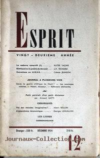

Le n° 12 de la célèbre revue Esprit du 1er décembre, contient lui-aussi un
article sur les soucoupes volantes

A Bassoues (France), 1 civil (39 ans) voit 1 lumière ovale,
très brillante, illuminant la région. Après quelques manoeuvres et oscillations à altitude moyenne, il atterrit
pendant 2 mn à moins de 3 km, puis décolle en direction de l'est.
Observation à Gulfport (Mississippi)Cas Blue Book n° 3352 non résolu.
Rencontre de Lorenzo Flores et Jesus Gomez
près de Carora (Venezuela).
Observation à Augusta (Maine)Cas Blue
Book n° 3326 non résolu.
Rencontre de Jesus Paz, près de San Carlos del Zulia (Venezuela).
3 jeunes hommes (Jesus Paz, Luis Mejia, membre de la Garde Nationale et un autre ami)
dinent dans un restaurant à San Carlos, puis rentrent chez eux en voiture. Alors
qu'ils se trouvent dans la banlieue, près d'un parc du Ministère de l'Agriculture, Paz demande à ses amis
d'arrêter la voiture pour qu'il puisse aller dans un endroit isolé du parc pour se soulager. Paz a à peine fait
une douzaine de pas avant qu'il appelle à l'aide. Ses amis courrent à son secours et le trouvent assommé et
étendu sur le sol. A courte distance se trouve un petit humanoïde poilu, courant vers un appareil brillant
ressemblant à un disque, resposant sur l'herbe. Mejia a juste le temps d'attraper une pierre et de la lancer au
disque, qui commence à s'élever avec un bruit de ronflement énorme. Paz est ramené en vitesse à l'hopital de la
ville, où les médecins le trouvent en état de choc. Il a de plus de longues et profondes éraflures sur son côté
droit et vers le bas le long de épine dorsale, comme des marques de griffes, aurait dit le médecin. Paz
dira aux responsables avoir marché autour d'un bosquet de grandes fleurs, ses traces amorties par l'herbe
épaisse. Soudain il serait tombé sur cette petite créature humanoïde et poilue, qui examinait les fleurs. Paz
tenta de s'échapper mais, alors qu'il se retournais, la créature l'attaqua, d'abord en le griffant et tirant sa
chemise, puis avec un souffle sur la nuque qui assome Paz Warren, Frank: Historic UFOs -
Flying Saucers: Serious Business - 1966, Rense, 21 août 2002.
Les Seekers ne sont pas récupérés.
A Bersaillin (France), 1 ébéniste de Poligny voit 1 objet très brillant sur la route, pense
d'abord que c'est une voiture américaine avec ses phares allumés, mais s'aperçoit bientôt que cela provient d'un
appareil sombre à environ 80 m de là, la lumière devint plus brillante, le témoin sent une intense vague de
chaleur, et crut mourir. Enfin, la lumière s'éloigne.
Le cataclysme prédit par les Seekers ne se produit pas. Dorothy Martin prétend que le
dieu de la terre, touché par les efforts des adeptes, a sauvé la planète.
Le bibendum Michelin offre une remise à tout Martien intéressé par un livre sur les soucoupes.
L'entraîneur d'une équipe de base-ball junior filme près des Grandes Chutes (Great Falls) dans le
Minnesota 2 objets striant le ciel près de la base de l'armée de l'air. La version officielle est qu'il s'agit d'une
escadrille de F-100 de retour vers leur base, mais la photo satellite montre que les objets volent beaucoup trop
vite pour que cette interprétation des faits soit acceptable.
A Bru (France), M. Gamba voit un objet ovale rouge, à 50 m de
lui. Quand il essaie de s'en approcher, il constata qu'il est comme "paralysé". Dès que cette paralysie disparaît,
il court chercher ses frères et reviennent près de l'appareil qui devint blanc puis rouge, s'élève et s'envole vers
l'est. Il est resté sur le sol au moins 15 mn. D'étranges traces sont découvertes comme si le sol avait été
retourné. Les petits arbres au bord de la rivière sont endommagés, comme s'ils avaient été coupés avec un couteau
Sud-Ouest, 31 décembre 1954.